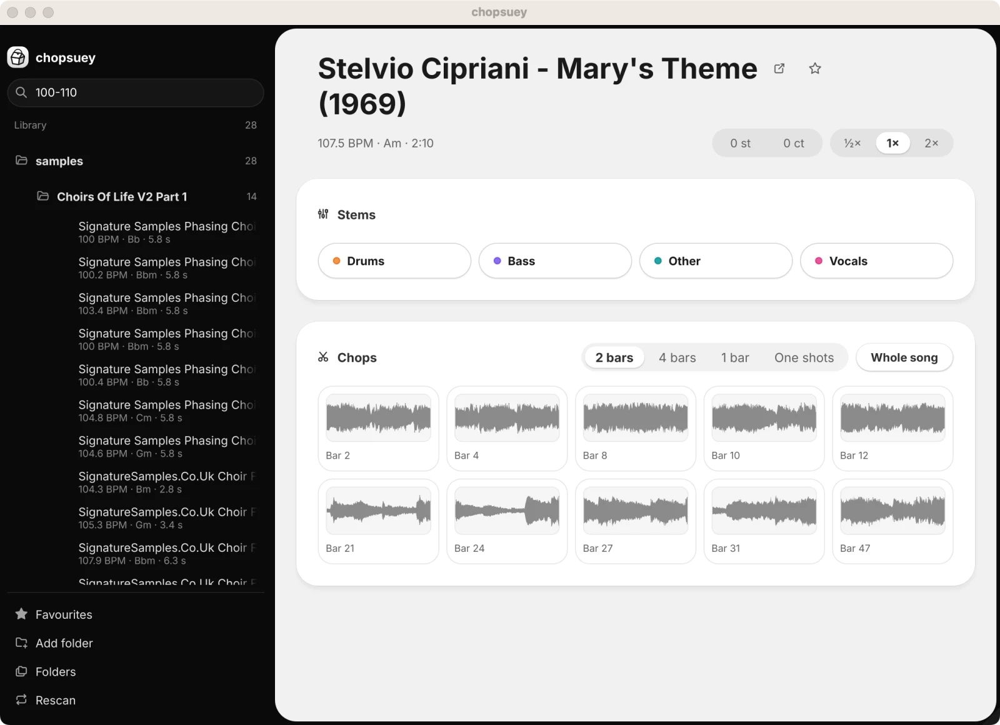

chopsuey
Star on GitHubAutomatically chops, splices and tempo-syncs your samples into usable loops & one-shots.
Run this in Terminal to install chopsuey:
curl -fsSL https://raw.githubusercontent.com/Toronto-Audio-Company/chopsuey/main/scripts/get.sh | bash
macOS only. Installs Rust too if you don't have it. Restart Live afterwards.
